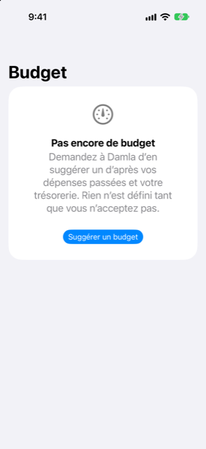

Guide › Aperçu
Budget
Des limites mensuelles, ou laissez Damla les suggérer à partir de votre historique.
Le budget fixe une limite mensuelle pour chaque catégorie de dépenses et montre comment le mois en cours se porte par rapport à ces limites. Damla suggère les limites à partir de vos dépenses passées et de votre flux de trésorerie, et vous pouvez changer n'importe quel chiffre avant de l'accepter.

Quand l'utiliser
- Vous voulez un chiffre mensuel par catégorie, calculé à partir de ce que vous avez réellement dépensé, pas un numéro sorti d'un modèle.
- Vous dépensez trop dans une ou deux catégories et vous voulez un signal clair pendant le mois, pas à la fin.
- Vous voulez savoir combien de marge votre revenu laisse après vos dépenses habituelles et les engagements que Damla connaît déjà.
- Vous voulez un objectif d'épargne en part de votre revenu.
Étape par étape
- Ouvrez l'onglet Analyses et touchez Budget. S'il n'y a pas encore de budget, l'écran dit Pas encore de budget et propose Suggérer un budget. Si vous en avez déjà un, touchez Demander une nouvelle suggestion.
- Sur l'écran Budget suggéré, réglez Garder environ … % du revenu avec le curseur. Il démarre à 10 pour cent, avance par pas de 5 et monte jusqu'à 40.
- Vérifiez le résumé : Revenu mensuel habituel, Déjà engagé chaque mois (échéanciers et paiements d'achats échelonnés, en moyenne mensuelle ; la ligne est masquée quand rien n'est engagé) et Reste après ce budget.
- Lisez les notes sous Bon à savoir, s'il y en a.
- Changez n'importe quelle limite en saisissant dans le champ à côté de sa ligne.
- Touchez Utiliser ce budget pour accepter, ou Annuler pour repartir sans rien fixer.
Rien n'est fixé tant que vous n'avez pas accepté une suggestion.
Comment la suggestion est faite
Damla regarde vos mois complets de dépenses enregistrées — jusqu'à six — et prend le milieu des montants mensuels de chaque catégorie comme chiffre habituel. La suggestion part de là.
- Une catégorie est un Coût fixe quand elle est présente depuis au moins trois mois après sa première apparition et que ses montants varient d'au plus un cinquième de leur moyenne. Les coûts fixes ne sont pas réduits.
- Toute autre catégorie est Flexible. Les catégories flexibles ne sont réduites que dans la mesure nécessaire pour atteindre l'objectif d'épargne, et jamais de plus de 35 pour cent chacune.
- L'objectif d'épargne est la part du revenu que vous réglez avec le curseur.
- Le pied de page indique sur combien de mois complets de votre historique la suggestion se base.
S'il n'y a pas d'historique pour travailler, l'écran dit Pas encore assez d’historique et vous demande d'importer un relevé ou d'enregistrer d'abord des dépenses.
Quand un budget est en place
Une fois que vous avez accepté un budget, l'écran Budget montre :
- Reste à dépenser ce mois-ci : le total de toutes les limites moins ce que vous avez dépensé jusqu'ici ce mois-ci, avec une barre de progression et la ligne « X sur Y · jour N sur M ».
- Par catégorie : chaque limite avec ce que vous avez dépensé jusqu'ici. Une barre rouge et « Dépasse de … » signifient que vous avez dépassé la limite. Une barre orange et « Les dépenses vont plus vite que le mois » signifient que vous avez plus de 15 pour cent d'avance sur le rythme du mois.
Sous la progression se trouvent deux boutons : Demander une nouvelle suggestion et Supprimer ce budget.
Bon à savoir
- Le budget fixe des limites pour les catégories de dépenses dans votre devise principale. Il ne déplace pas d'argent, ne crée pas de comptes et ne bloque rien.
- Le revenu pour la suggestion est ce qui est réellement entré sur votre historique. Si rien n'a été enregistré, il retombe sur le revenu que vous avez réglé dans l'onglet Plan, et une note le dit.
- Saisir 0 dans un champ de limite retire cette catégorie du budget que vous acceptez. Vider le champ ne le fait pas : il retombe sur le chiffre suggéré.
- Les notes sous Bon à savoir signalent un creux de prévision sous votre solde minimum, une catégorie inhabituellement chère le mois dernier, ou un déficit qu'aucune réduction ne peut combler. Si votre historique montre que vous dépensez plus que vous ne gagnez, une note nomme l'écart mensuel.
- Le budget rapporte ce que vous avez dépensé par rapport à ce que vous avez fixé. Ce n'est pas un conseil financier.
À voir aussi
- Où est passé l'argent
- Revenus et factures qui reviennent
- Paiements en plusieurs fois
- Prévision et reste à dépenser
Quelque chose n’est pas clair ou manque ? Écrivez à support@raveniq.ai en indiquant la page.